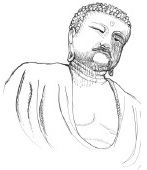

“Aydınlanmış kişi” anlamına gelen Buda, Prens Siddhartha Gautama olarak MÖ altıncı yüzyılda doğdu. Babası, Hindistan’da savaşçı Shakya kabilesinin şefiydi.
Bazı kayıtlara göre Gautama doğmadan önce, bir kâhin ortaya çıktı ve Gautama’nın ya büyük bir kral veya büyük bir dinî lider olabileceği bildirdi. Gautama’nın babası onun bir kral olmasını umdu ve bu yüzden onu dinden ve dünyanın acısından uzak tutmaya çalıştı. Ancak yirmi dokuz yaş civarında, babasının yaptırdığı koruma duvarlarının dışına çıktı ve hayatını sonsuza dek değiştiren Dört Görü’ye tanık oldu. Yaşlı bir adamı, hasta bir adamı, bir cesedi ve kutsal bir adamı, sofuyu gördü. Böylesi acı çekme ile böylesi bir inancın yan yana dünyada var olduğunun farkına vardıktan sonra Guatama, yaşam tarzından vazgeçti ve bir keşiş olduğu kuzeydoğu Hindistan’a çekildi.
İç huzurunu başarmak için keşişlerle meditasyon yaptıktan ve oruç gibi çeşitli yöntemler denedikten sonra, Gautama tatmin olmamıştı. Bir tarafta kendini beğenmişlik ile diğer tarafta kendini küçük görme arasında yer alan “orta yolu” keşfetti. Gautama, bu şekilde meditasyona başladıktan sonra aydınlanmayı tecrübe etti ve hakikati gördü.

Gautama, Dört Asil Hakikat’in olduğuna inandı. İlki, dünyada acının olduğudur. İkincisi, bu acının bir nedeni vardır ve o da istektir. Üçüncüsü, ‘nirvana’ adı verilen, acının olmadığı bir hâl vardır. Dördüncüsü, bu hale erişmenin bir yolu vardır.
İlk anda Gautama, bu kurtuluşu diğerlerine öğretmek konusunda emin değildi. Ancak, bir ruh geldi ve ona öyle yapmasını söyledi. Ondan sonra Gautama, Hindistan’da Ganj bölgesi genelinde vaaz vermeye başladı. Aydınlanma yolunu diğerlerine öğretmek göreviyle, Buda’nın yolunda sadece tek olduğunu iddia etti.
Gautama, genelde inanıldığı üzere seksen yaşında ölene kadar diğerlerine hakikati öğretmeye devam etti.
EK BİLGİLER:
1. Çoğu kaynak, Gautama’nın bir yığın zehirli mantar yemekten dolayı öldüğüne inanır.
2. Buda’nın yanında Gautama, aynı zamanda Shakyamuni veya Shakya Kabilesi’nin Hikmet Sahibi olarak da bilinir.
3. Budizm, Hindistan’da doğmasına rağmen, on üçüncü yüzyılla beraber ülkede pek çok yabancı istila sonrasında neredeyse tamamen yok oldu. Ancak bununla beraber bugün de halen yürürlükte kaldığı Doğu Asya’ya, Güneydoğu Asya’ya ve Himalaya bölgesine o zamanlar bile hızla yayılmıştı.